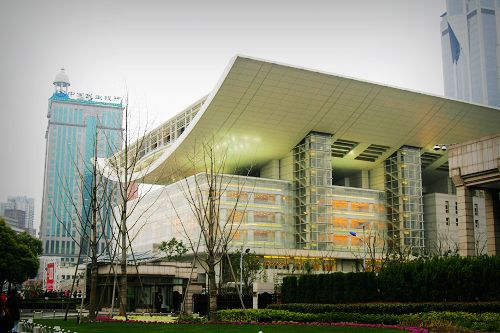
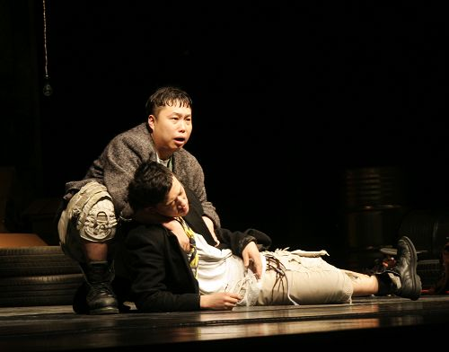
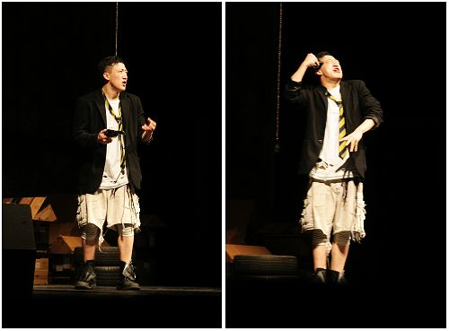
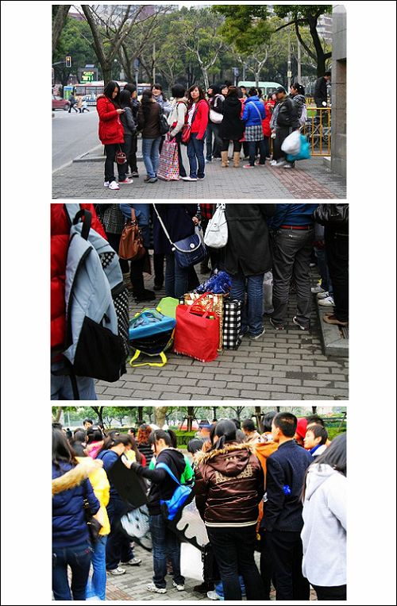

上海大剧院

终于等来我第一场要看的话剧《两只狗的生活意见》，已经是台上演员的第291场。
幸好提前买的票，门口的黄牛票要400一张，简直...欺负外地人么~

剧院外的广告牌

常言道：“演戏的是疯子，看戏的是傻子。”这两位演员估计演的很过瘾，那吐沫、那表情....满场飞呐，演得我坐在下面心里也直喊过瘾。不过两位演员演到291场，他们会是什么感觉？我特喜欢那个瘦子演员，好象叫刘晓晔，因为他的眼睛够小，表情够匪气。
看这幕话剧时，我联想到我们的周围有90%的人人格分裂，如果做话剧演员就挺好，可以将现实中分裂的那部分合理地在舞台上发泄出来，无论台上如何淋漓尽致地疯狂，那都是艺术，卸了妆还是一个社会标准下的正常人。


除了唱歌，演员讲台词没用话筒，剧院不大，上下三层都坐满了。演员的台词功底扎实，吐沫象“喷”........泉一样随着台词喷射在灯光下，真TM带劲！这次我坐在一楼第二排，有那么点小偏。演员与观众还有互动呢，两演员下舞台抢观众的背包、钱包和外套，演着演着突然停下来问候一下场内走动或迟到的观众，不过我觉得大部分被骚扰的观众表现的比较“搓”，扭扭捏捏。
我把自己的包藏在身后，把书垫在屁股底下，然后盼望着两演员能来骚扰骚扰我这个伪文艺青年，可是，一直到演出结束，我这小偏的座位也没被骚扰到，NND。


来福想象着他如何悲壮而惨烈的死去，鲜血如何喷洒在四方，他用手枪指着自己的脑袋，从生到死演练着...生死过程变得滑稽而渺小。


两只有理想有抱负的狗，返乡途中。
这是用喜剧形式表达的悲剧么？

上海大剧院在搞群星慈善会，外面的“迷”们大多数是小女生，还带着迎接自己偶像的道具。而隔壁的中剧场即将演出《两只狗的生活意见》。

10 Responses to “看话剧”
2009-03-03
哇,看戏居然还能拍照的?不错喔
2009-03-03
不能拍，我偷偷拍的，没用闪光灯，没有喀嚓喀嚓声，黑暗中基本没人察觉到，嘿嘿~
2009-03-03
据说“恋爱的犀牛”很好玩，去年在北京没看成，可惜。
2009-03-03
嘻嘻，我订了《恋爱的犀牛》，也是在上海大剧院，期待~~
2009-03-03
相信你一定会爱上犀牛
2009-03-03
表演还可以，就是感觉缺乏深度。
2009-03-03
时刻准备着却没有被骚扰到，哈哈~~
很久没有当过“傻子”
2009-03-03
Edward，再看场犀牛吧~
2009-03-03
用单反拍的吧？这样也能不被察觉？厉害。顺便推荐暗恋桃花源，不过现在好像袁泉不演了。。。
2009-03-04
好喜欢林奕华的《华丽上班族之生活与生存》，张艾嘉演得很不错，值得一看哦！
Leave A Reply
存档只读，评论已关闭。